Overview
ReLeaf puts five pieces of work in a line and asks them to hand off to each other. A forecast decides that a field is about to be stressed. A green light tells engineered Bacillus subtilis to start making a protectant. A hollow-fibre reactor grows those cells, keeps them behind a membrane, and lets the protein out. An inline photometer watches the culture the whole time. The protectant reaches a plant and does something measurable to it.
Taking each piece on its own bench would have told us little about whether the line holds, so the sections below follow the line instead, in the order a molecule would travel it. Each one opens with the question that stage has to answer and closes with what we can and cannot say.
A chain fails at its weakest joint, so this page marks every joint. Each stage below carries one of three states, and they are used strictly.
| State | What it means here |
|---|---|
| Measured | A number exists, it came off our own bench, and this page shows it. |
| Partial | Something was observed. It does not carry the claim the stage has to make. |
| Designed | The thing exists and works as an apparatus. Nothing has tested what it was built to test. |
One stage out of seven is fully closed by measurement. The other six are marked below, each with what is missing from it.
Can weather and sensor data become a light command?
Never reached a culture 3 Construct assemblyWere the genetic constructs built as designed?
Sequence confirmed 4 Light deliveryCan the array deliver a controlled optogenetic signal?
No induction curve 5 Culture monitoringCan the inline photometer follow culture density?
Linearity only 6 Protectant functionDo the protectants improve a plant's stress response?
Injury only 7 Whole systemCan the reactor grow cells and release protectant?
Growth, not release 8 ContainmentDo the engineered cells stay behind the membrane?
One platingSection 9 collects every open joint in one ledger, with the experiment that would close it. The ten amber boxes along the way are notes to ourselves: places where two of our own sources disagree and we have declined to pick a winner before the freeze.
Stress signal
Can weather and sensor data be turned into a decision to switch the light on?
This stage is computation, and it never touched a bench. Weather records, field sensors and a satellite-derived picture of where Taiwanese farmland actually sits are folded into a stress index, the index is projected forward, and the projection decides whether a green channel should be driven. Every part of it was written, run on real data, and reported where it belongs: the stress index and the optogenetic kinetics on Math Model, the forecasting and the measurement trust layer on Software, and the land, farm-size and farmer-age layers on Geospatial Analysis. Those three pages carry the numbers and the error bars, and repeating them here would only give a judge two versions to reconcile.
What belongs on this page is the joint. No forecast has ever driven a light, and no light driven by a forecast has ever reached a culture. Nothing has closed the command path from the model to the array end to end. Until section 4 has an induction curve there is nothing for a command to command, so the reason this stage is marked partial lies downstream of it.
Construct assembly
Were the genetic constructs assembled as designed, before anything downstream depended on them?
Three independent methods agree on this stage: colony PCR, amplicon verification and sequencing. The design was split into functional modules so that a failure could be located, each module was screened by colony PCR, the survivors were re-amplified with construct-specific primers, and the plasmids that passed were sent for sequencing. Every module was assembled with the SubtiToolKit Golden Gate system [3]. Part-by-part detail, sequences and registry numbers are on Parts; what follows is the build record.
Colony screening
Colony PCR was the first filter. Twenty-four colonies were screened at a time against the expected insert size, and only colonies giving a band at that size went any further. The screen is fast and crude. It reports fragment length, and sequence is a later question.
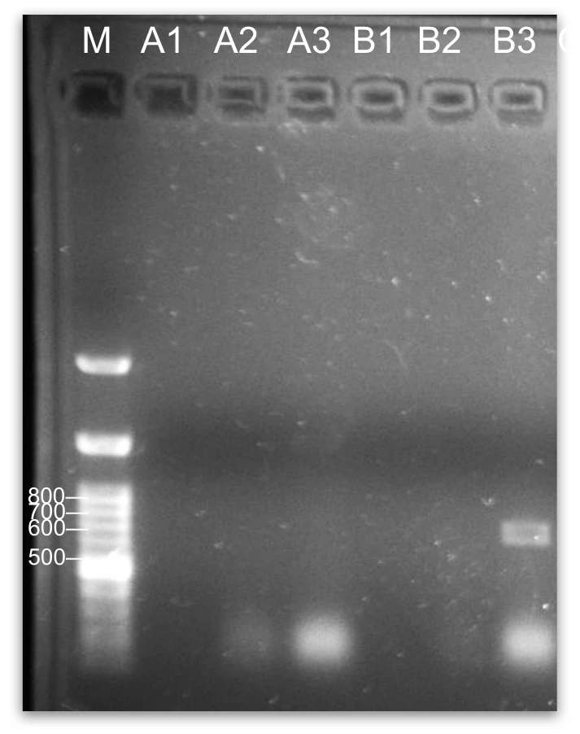
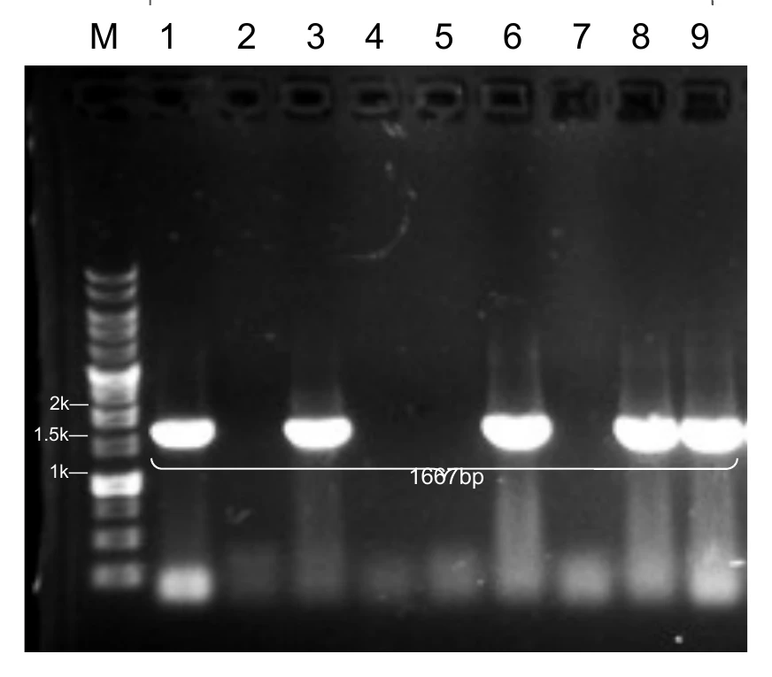
Amplicon verification
Every clone that survived the screen was amplified again with primers designed against the intended construct, so that a band at the expected size now reported the junctions themselves. The three panels below are the modules the rest of this page depends on: the bilin cofactor pathway that makes the CcaS sensor functional at all, and the two ACC deaminase cassettes, one under the green-light promoter and one constitutive.
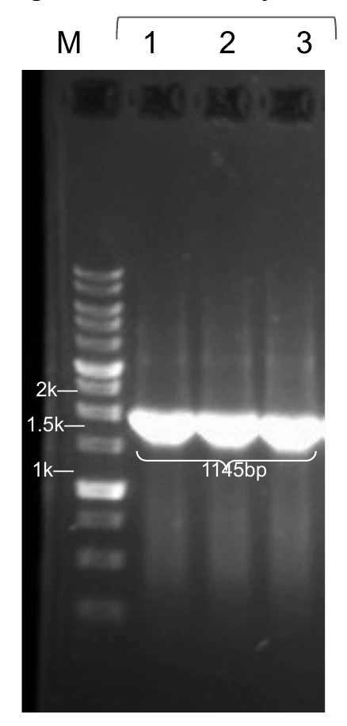
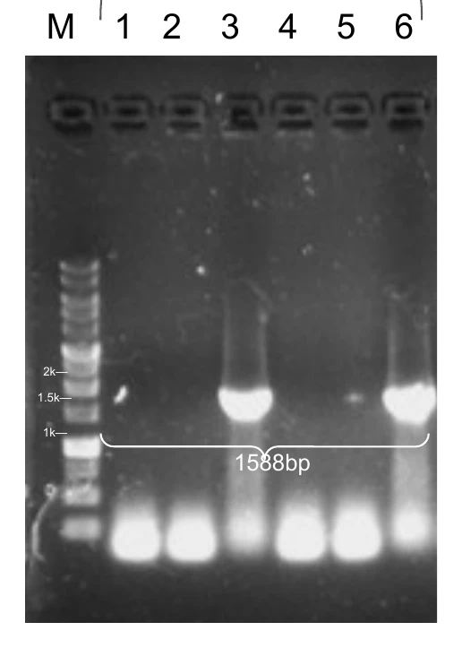
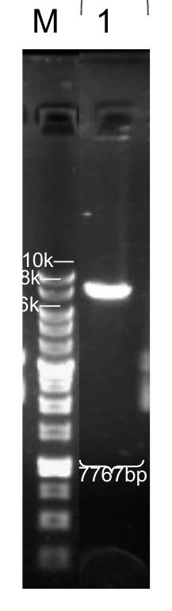
Sequencing record
Thirteen Level-1 modules were attempted. Nine of them carry both a named clone and a sequencing date, and those nine are the ones any claim on this wiki rests on. Three are recorded as failures and one never produced a clone at all, which is why the shoot-side protectants and the galactan module do not appear further down this page.
| Module | Level-1 construct | Clone | Colony PCR | Sequenced |
|---|---|---|---|---|
| A | PtagC+RBS-Ho1:PcyA-L3S2P21 | A1, A2, A3 | 30 Jul | 31 Jul |
| B | PliaG-RBS0-CcaSm3-B0015 | B2 | 24 Jun | 3 Jul |
| C | PlepA-RBS0-CcaSm3-B0015 | C6, C9 | 22 Jul | 24 Jul |
| D | Pveg-RBS0-ccaR-B0015 | B2, B4 | 26 Jun | 1 Jul |
| E | PcpcG2-veg-EEBD-RBS0-Csn-AmilCP-B0015 | G3 | 24 Jun | 3 Jul |
| F | Pveg-EEBD-RBS0-Csn-AmilCP-B0015 | H10 | 26 Jun | 3 Jul |
| G | PcpcG2-veg-EEBD-RBS0-Csn:LEA-B0015 | Unsuccessful | ||
| H | Pveg-EEBD-RBS0-Csn:LEA-B0015 | No clone and no date on record | ||
| I | PcpcG2-veg-EEBD-RBS0-Csn:ACCD-B0015 | I3, I6 | 27 Jul | 28 Jul |
| J | Pveg-EEBD-RBS0-Csn:ACCD-B0015 | J9 | 27 Jul | 28 Jul |
| K | Pveg-EEBD-RBS0-SamyQ-TAT-HA-AmilCP-B0015 | D10, D14 | 9 Jul | 14 Jul |
| L | 3P-EEBD-RBS0-GanA-Gala-L3S2P21 | Unsuccessful | ||
| M | PcpcG2-veg-EEBD-RBS0-GanA-Gala-L3S2P21 | Unsuccessful | ||
Clone I6 is flagged in the build record as one the team could not locate afterwards, so module I is effectively a single usable isolate. Work on the protectant variants continued into late August and early September, with SamyQ-ACCD and SamyQ-LEA fusions sequenced at Level 0 on 19 and 20 August and their Level-1 assemblies on 26 August and 3 September. Those are on Parts.
Level-2 assembly
Level 2 puts four Level-1 transcription units on one backbone: the bilin pathway, the CcaS sensor, CcaR, and the light-driven ACC deaminase output. The device is checked by amplifying across each internal junction with a primer pair specific to that junction, so a clone is only called positive when all three junctions give a product at the expected size.
The 19 September gel runs the full check. Three independent ACDI clones, X1, X3 and X9, were amplified across all three junctions on one gel, nine lanes, and every lane carries a band where it should. Junction A is L2 pcyA F against L2 CcaSm3 R at 375 bp, junction B is L2 CcaSm3 F against CcaR R at 632 bp, and junction C is CcaR F against Csn R at 661 bp.
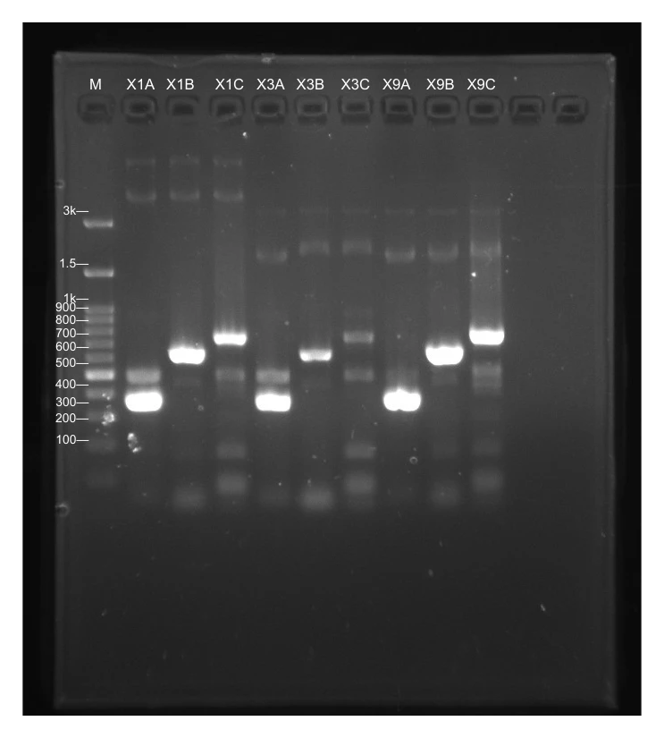
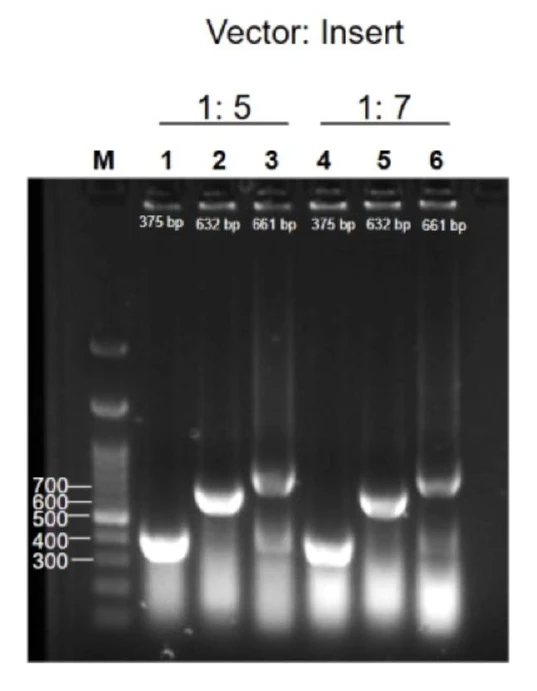
A second Level-2 device exists and it appears nowhere else on this wiki. ABDI carries the same four modules with the PliaG version of the CcaS unit in place of PlepA, and clone V7 was called positive on colony PCR on 1 September. Its junction checks are spread across separate gels, so it is a weaker record than ACDI even though the device was built.
The build record leaves the Level-2 sequencing date blank for both devices as of 23 September. A junction check establishes that the modules sit in the right order with the right joins, and the bases between them remain unread.
Taken together, three methods that fail in different ways all agree on the same nine Level-1 modules, and the device built from them passes every junction it has. That is what a measured stage looks like on this page. The one stage fully closed by measurement is also the one furthest from the application.
Light delivery
Can the array deliver a controlled optogenetic signal, and does that signal change what the cells make?
The whole ReLeaf idea turns on light. A prediction is only useful if it can reach the cells, and in our design it reaches them as green photons at 520 nm through the CcaS/CcaR two-component system, with red at 660 nm to stop production [1, 2]. We built a dedicated array for it, DiOPAL, described in full on Hardware: twenty-four tubes over twenty-four LEDs in a light-tight box, arranged as two wavelengths by three intensity tiers with four replicates each, driven by pulse-width modulation held constant for the length of a test.
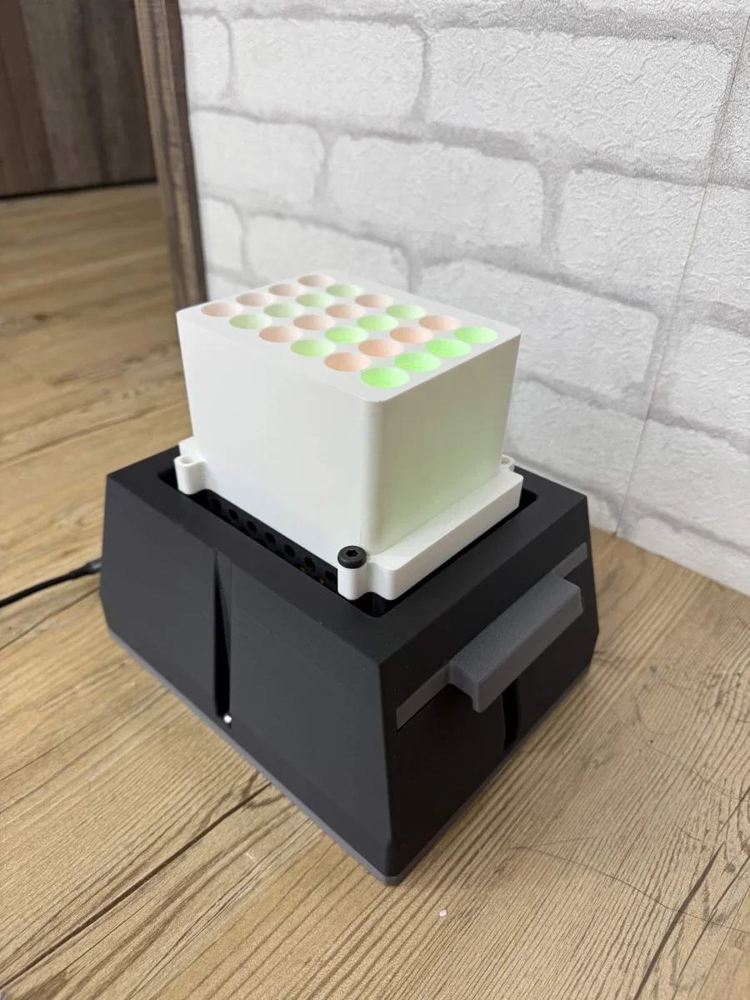
The hardware work is documented. Forty LEDs were bought and each one was measured individually at 5 V in a fixed geometry; the twenty-four that fell into tight groups of four were kept and became the six channels, and the sixteen rejects were discarded. Both wavelengths were driven independently from one controller, and the enclosure blocks ambient light, which matters because ambient light would otherwise swamp the low-intensity conditions.
Two things in that description do not hold. The first is that the three tiers are intensity tiers: the measured green channels span 2.33 to 2.40 kLux, a spread of about three per cent, which is LED binning; the duty cycles that would separate the tiers are unrecorded. The second is well-to-well evenness. An acceptance criterion for it was written on 19 May and never measured, so the claim that every tube sees the same dose has no measurement behind it.
No induction curve exists. Nothing anywhere in this project shows PcpcG2 output changing with green light. The array has never run a CcaS/CcaR experiment on a live culture, and no dose, duration or intensity has ever been paired with an expression readout. Every statement about the light switch on this wiki, including the ones on Math Model where the optogenetic kinetics are simulated, is design intent carried forward from the literature. The state is designed, and this is the joint that breaks the chain in the middle.
Because the switch has never been shown to switch, the ACC deaminase work that follows was carried out on the constitutive cassette, module J. The reactor, the blot and the plant sprays are all constitutive expression.
Culture monitoring
Can an inline photometer follow culture density continuously, without opening the loop to take a sample?
Sampling a closed reactor costs volume and risks contamination, so we built a dual-beam photometer into the circulation loop: a sample channel through a short optical path and a reference channel taken before the sample, read every ten minutes and logged to a dashboard. The instrument, its four build iterations and its own open questions are on Hardware, and the trust layer that decides which readings to keep is on Software.
Continuous run
The long run started on 21 July 2026 at 22 °C and logged at ten-minute intervals into August, producing 2,671 valid rows. It is the longest unattended run the instrument has completed, and it is the run that exposed its limits. A process event appears between 120 and 160 h. An instrument event begins around 215 h, the sensor alarm fires at 216.3 h, and from 243.0 h the OD channel cannot be used at all. If the run is 434 h long then the OD trace is good for 243 of them and bad for the remaining 191.
There is a second problem with this run and it is larger. What the instrument was looking at was never written down. The medium, the inoculum and which compartment the optics sat on are all unrecorded, and the wet lab archive contains no OD600 time series of any kind: the only OD600 values anywhere in it are four endpoint numbers from the two June reactor runs. So this figure demonstrates an instrument running.
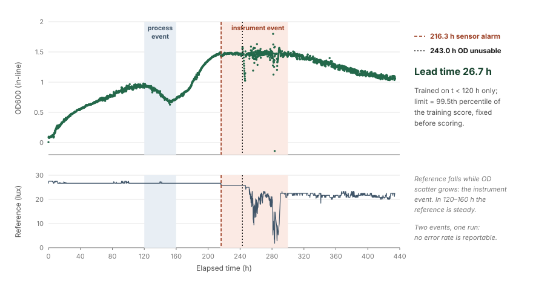
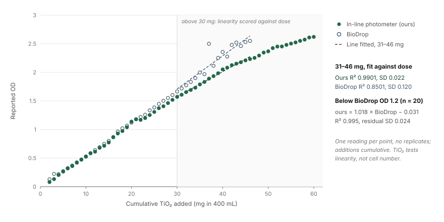
Turbidity calibration
A growth curve is only worth logging if the number on the axis means something. We calibrated against titanium dioxide because it gives turbidity without growing, so the optical response can be characterised on its own. Cumulative additions from 2 to 60 mg in 400 mL were read on our instrument and, in parallel to 46 mg, on a BioDrop benchtop spectrophotometer.
Against the benchtop instrument, over the twenty paired points where the BioDrop reads below 1.2, the fit is ours = 1.018 × BioDrop − 0.031 with R2 = 0.995 and a residual standard deviation of 0.024. Bland-Altman gives a bias of −0.019 with limits of agreement from −0.066 to +0.028. Against dose over the 31 to 46 mg range that both instruments cover, ours returns R2 = 0.9901 with a standard deviation of 0.022 and the BioDrop returns R2 = 0.8501 with a standard deviation of 0.120. At the top of the range our instrument is the steadier of the two. We had expected that comparison to run the other way.
Two limits belong with those numbers. There is one reading per point and no replicates. And TiO2 establishes that the optical response is linear in turbidity, which is a weaker statement than saying a reading maps onto a cell count; the iGEM measurement work on turning optical density into cell number sets out what that second step needs [5].
Silica calibration
The second standard was meant to test whether the TiO2 relationship reproduces with a different scatterer. Monodisperse silica microspheres of 1 µm diameter and refractive index 1.46 give a scattering problem whose extinction can be computed in advance, and the van de Hulst approximation for those particles [6] puts 1 mg/mL of SiO2 at about OD600 2.3, so the measured slope can be checked against a theoretical one. The protocol is written in full, down to the sample-then-spike titration that holds volume constant at 50 mL and its closed form, Cn = 2.5 × [1 − (50/51)n] mg/mL over 45 to 60 cycles, with both inline units and the BioDrop read at every cycle.
The run has not happened. There is no SiO2 data in the archive: no regression, no R2, no graph, and the DBTL record for that cycle is a list of what is still needed. The method is on Experiments.
The instrument ran for weeks unattended and its optical response is linear and characterised against a commercial reference. Four things are still missing before this stage moves past partial: a tie to cell number, the SiO2 calibration, an intact OD channel across the whole run, and a record of what that run was watching.
Protectant function
Do the protectants improve how a plant handles salt or heat?
This section has the thinnest evidence on the page and it is the one a reader cares about most, so the summary comes first. The plant work measures injury, precisely and repeatably. Every rescue attempt in the archive fails its own controls. The full experimental history, all eight sets, the protocols and the failures are on Plants; this section reports the outcome.
Salt dose response
Experiment set 6 is the one solid result. Arabidopsis thaliana seedlings were vernalised on 19 July, moved to the growth incubator on 23 July, and root length was measured from images on 3 August, six days after transfer, with nine seedlings in every group.
| NaCl | No trehalose, mean ± SD | 5 mM trehalose, mean ± SD | n per group |
|---|---|---|---|
| 0 mM | 74.95 ± 2.77 mm | 71.96 ± 3.13 mm | 9 |
| 75 mM | 34.77 ± 4.41 mm | 29.18 ± 8.95 mm | 9 |
| 100 mM | 11.00 ± 4.07 mm | 14.71 ± 5.56 mm | 9 |
| 150 mM | 1.36 ± 1.09 mm | 2.53 ± 0.94 mm | 9 |
The left-hand column is a clean monotonic dose response with non-overlapping spreads, and the earlier objection to our plant data, that it was single readings presented as if they were means, does not apply here: every one of these eight numbers is a mean of nine individually measured seedlings. Salt at 75 mM leaves a root at 46 per cent of control and 150 mM leaves it at about two per cent. That sets the operating window for any rescue experiment, and it is the number Math Model uses to calibrate injury.

Rescue attempts
Six experiment sets used trehalose as a reference osmolyte, and none of them produced a reliable rescue. Now that the spreads are computed the point is sharper than it was. In set 6, trehalose moved 100 mM from 11.00 to 14.71 mm, a gain of 3.71 mm against a pooled standard error of about 2.3, and it moved 75 mM the other way by 5.59 mm against a pooled standard error of about 3.3. Only the 150 mM pair comes close to separating, and that is a gain of 1.17 mm on roots that are barely growing. Different sets also picked different best doses, 5 mM in one trial of set 5 and 10 mM in the other, and set 6 had already been designed around 5 mM before that second analysis came back. Trehalose is the control we run to ask whether the assay can see a rescue at all, and after six sets we cannot call it a validated positive control.
Set 7 tested a commercial peptide preparation from CH Biotech at 1:500, in pre-treatment, co-treatment and after-treatment timings on horizontal plates. Its fourth trial, on 5 September, is the only internally coherent dataset in the whole peptide series: twelve arms, three replicates each, read at 649 and 665 nm in 95 per cent acetone with the Lichtenthaler coefficients. The controls behave, giving a clean chlorophyll ladder of 0.2986, 0.2479 and 0.0690 per extract across 0, 75 and 100 mM NaCl. At 100 mM the co-treatment and after-treatment arms read 0.2398 and 0.2564, about three and a half times the salted control, which is the largest protectant effect anywhere in our plant data.
It has to be read with its own failure in the same breath. The co-treatment arm's no-salt control came in at 0.0318, lower than every salted arm on the plate, which means the internal control for that arm did not work and the arm cannot be trusted. Pre-treatment is worse than control at both salt levels. There is one plate per arm, so the whole table is an n of one biologically and the three replicates measure pipetting. A three and a half fold effect with a broken control is a reason to run the experiment again.
Our own designed protectants are absent from this section for a simple reason. LEA14 and BoPep4 have never been applied to a plant. Module G failed and module H produced no clone, the SamyQ fusions were only assembled at Level 1 at the end of August, and no plant experiment in the archive uses either. The four-way protectant comparison the draft of this page proposed cannot be written from this evidence, and nothing on this wiki should imply that it can.
Heat stress
Heat was run twice, once on vertical agar and once hydroponically. The agar run put seven-day-old seedlings into a 37 °C chamber on 15 August in four groups, control plus the three peptide timings, with the peptide sprayed onto the co-treatment group on 16 August and the after-treatment group on 17 August, and observations on 18, 19 and 21 August. The chlorophyll sheet for that run reads control 0.626 mg/g against 0.348, 0.337 and 0.335 for the three treated groups, which would say the peptide halved chlorophyll in every timing. We do not believe that number and we are not publishing it as a result: in the control row of that sheet the OD645 and OD663 columns appear transposed relative to every treated row, and a transposition would produce exactly this pattern.
Hydroponics
The hydroponic platform was built so that a root sits in a known concentration in water, which is closer to how a protectant would actually be delivered through irrigation. Salinity set 1 applied 100 mM NaCl to thirteen-day-old plants across four boxes: control, pre-treatment three days before the stress, co-treatment at the same time, and post-treatment three days after. A second set ran heat on the same four-arm design, with three replicate reads per box.
Neither set can be attributed to a protectant. No file in the archive names what went into the boxes. The record describes four arms and calls the agent "protectant" in every sentence, and the conditions section for the heat set stops at the word "Conditions:" with nothing after it. Two complete chlorophyll datasets exist and nobody can say what they are datasets about, which is a record-keeping failure.


Salinity set 1 does demonstrate the normalisation problem. Normalised to fresh weight the control wins at 0.0828 mg/g and co-treatment comes last at 0.0617. Normalised to plant count, co-treatment wins at 1.251 and the control drops to third at 0.714. Those are the same four samples ranked in opposite orders, and the reason is that the fresh weights span 0.0503 to 0.2029 g, so dividing by a small stressed mass flatters it. With one box per arm and one reading per box, the table decides nothing about treatment timing and settles a great deal about how chlorophyll should be reported. Every chlorophyll figure quoted on this page is un-normalised or is given with its normalisation named.
Enzyme activity
The draft of this page promised an enzymatic activity assay for ACC deaminase [4], sitting between protein expression and plant phenotype, as an independent check that the protein we made was functional. No such assay exists. There is no ACC deaminase activity measurement, no ELISA, and no enzyme kinetics anywhere in the wet lab archive. Everything labelled ACCD in the plant data is a phenotype test: a preparation is applied to seedlings and the plates are photographed.
Experiment set 8 is that test, and it is the newest plant work. Seeds were vernalised on 18 and 21 August, moved to the incubator on 22 and 25 August, and photographed roughly daily through 5 September, with control, 75 and 100 mM NaCl, and three ACCD treatment timings. Both decks are photographic logs. In the master experiment index, every column for set 8 except its number and its purpose is empty: no date, no duration, no salt concentration, no dose, no protocol, no root length, no fresh weight. The one numeric readout that appears to exist is a chlorophyll sheet, and it is not usable: three replicates of one extract read 0.106, 0.830 and 1.092, a tenfold spread within one sample, on five of its twelve rows, and the two workbooks then differ on those same rows by factors of seven to sixty-six.
The experiment also fought its material. The pretest was abandoned after bacterial contamination, a Western blot then showed the B. subtilis preparation carried no detectable ACC deaminase, and trial 1 met bacterial growth again. Experiment set 8 is running and it has produced no number. The project's headline protectant has not been shown to help a plant.
The expression side of that question has an answer and it is negative. A Western blot run on 24 August carried a single band, sharp and saturated, at roughly 41 kDa, and it was in the lane loaded with the 18 August culture. The lane loaded with the 23 August culture, which is the material that had been sprayed onto plants, is blank. The sprays of that week were therefore not a protectant treatment, whatever else they were.


The stage is partial: a precise injury assay, no rescue that survives its controls, and no enzyme measurement of any kind.
Whole system
Can the reactor grow the culture and put protectant into the output pathway?
The reactor is a perfusion loop: a PES hollow-fibre cartridge of 0.2 µm rating [7] with about 200 mL of lumen volume, a medium reservoir, and a peristaltic pump circulating between them. Cells live in the lumen, protein passes the membrane into the shell, and the shell side is what a farmer would eventually draw from. The engineering of it is on Hardware and the hydraulics on Bioreactor Calculations.
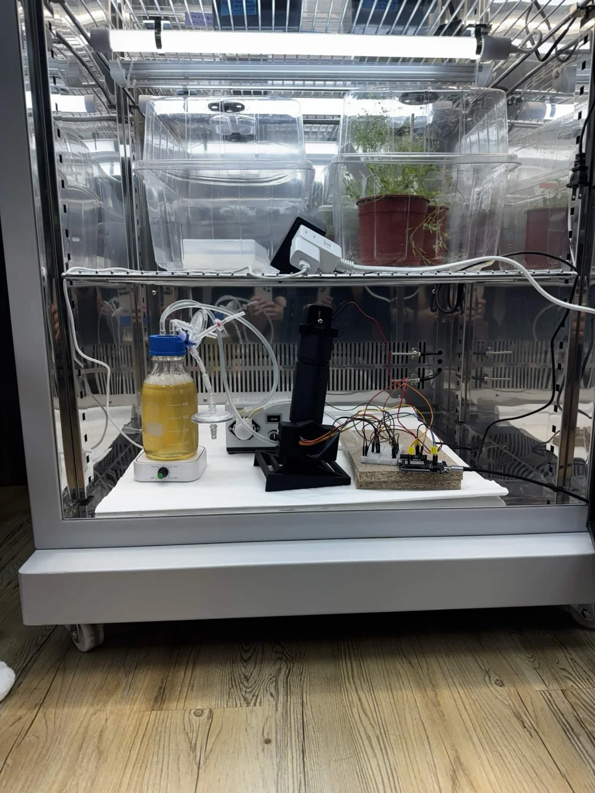
Growth in the reactor
Two versions were run and both taught us something. Version 1, on 6 June, put 300 mL of LB and 20 mL of overnight culture through the loop at 94 mL/min and stopped early when medium leaked at the pump. It ended at OD600 0.304 in the loop against 0.480 in a serum-bottle control, and a regression on the lumen series gives a mean OD of 0.142 with a slope of −0.0024 OD/h at p = 0.759. The culture in the fibre lumen did not grow at 22 °C while the control at the same temperature did, so the difference was the reactor and not the temperature. Oxygen starvation, cumulative shear and adhesion to the fibre walls are all still live explanations and none has been eliminated.
Version 2, on 14 June, added magnetic stirring at 200 rpm, a sampler between the reservoir and the pump, and ran at 37 °C. It reached plateau at OD600 0.8 to 0.9 in about two hours, against a shake flask reaching 0.6 to 0.8 in about four and a half hours. Under stirring at 37 °C the reactor beat the flask on both time and final density. The team recorded the lesson as: stirring is essential. It also explains the version 1 result.
Pressure and flow
The pump was calibrated across its range in three trials per setting. Setting 10 gives 103, 100 and 98 mL/min, an average of 100.3; setting 20 gives 314 and setting 50 gives 979. Transmembrane pressure was then logged against flow on 13 and 14 August. Pressure rises monotonically with flow in all three of those runs, over roughly 110 to 420 mL/min, and the zero-flow intercept of the first run is 0.0327 bar.
Stability over time was never recorded. Every row in both workbooks is a spot reading at a pump setting, with no time column and no repeat series, so "pressure and flow stability" is at present a claim the data cannot support. What the data do show is a reproducibility problem: at about 405 mL/min the three runs read 3.73, 1.13 to 1.26, and 3.22 to 3.52 psi. A threefold spread at the same flow, with no condition labels and no membrane identifier to explain it, is the thing to resolve before any transmembrane pressure number is published.
Protectant release
Release has two halves: the protein has to leave the cell, and it has to cross the membrane. The first half has one piece of evidence and it is positive. On 2 August a Western blot of B. subtilis carrying the ACCD construct was run in three fractions side by side, total pellet, soluble pellet and supernatant. Bands sit between 35 and 40 kDa in the supernatant lanes and the two pellet lanes are effectively blank. That is the only fractionation evidence in the archive that the Csn secretion tag does what it was chosen to do, and the whole reactor design assumes it.
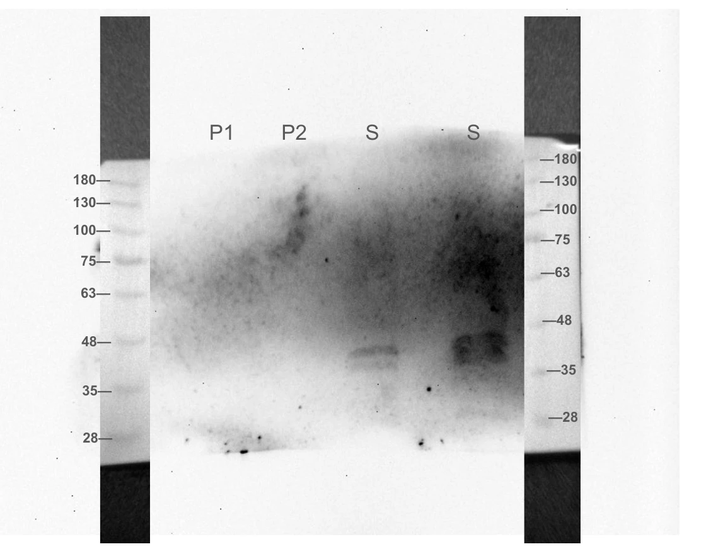
The second half is the joint that matters, and it is the one our two internal drafts read in opposite directions. The reactor was run on the constitutive ACCD cassette and sampled every two hours at 14, 16, 18, 20, 22, 24, 40, 42 and 44 h, in three fractions: lumen cell lysate, lumen medium and shell medium. The blot used a mouse anti-His primary antibody.

The reactor has a version history running to V7 on paper, with a spectrophotometer, a magnetic pump, pressure and pH sensors and self-cleaning listed against the later versions. Those are intentions. The version record has Design, Build, Test and Learn entries for V1 and V2 and bare headings under V3, V4 and Final, and every bioreactor measurement in the archive comes from V1 and V2, in June.
So the stage is partial, and its three parts have different standing. The reactor grows the culture, on an n of one against an n of one. The secretion tag has one supporting blot. Membrane crossing stays undecided, for the reasons in R3.
Containment
Do the engineered cells stay on their side of the membrane?
Geometry and one plate are what the containment claim rests on. The cartridge is rated at 0.2 µm and a B. subtilis cell is a rod of micrometre scale, so whole cells should stay behind it while a protein of tens of kilodaltons passes.
The test was done once. During the version 1 run on 6 June, 2 mL of shell-side liquid was spread on an LB plate and no colonies grew. That is the entire containment record for this project, and it comes from the run that stopped early when medium leaked at the pump. The draft of this page writes it as "in our trials", plural; there is one plating, on one run. Replicate count, incubation time and incubation temperature were not recorded, and no photograph of the plate exists, which is why there is no figure in this section.
The geometry argument is weaker than it sounds when written down carefully. Our own pages give B. subtilis as a rod of 1 to 2 µm in the containment argument and as a 0.8 by 3 µm rod in the fouling model, and neither figure carries a citation. A 0.2 µm microfiltration membrane also passes debris and vesicles in the 20 to 200 nm range along with the protein, so the barrier works at the scale of a cell. One plate with no colonies is consistent with retention at a detection limit nobody recorded.
The state is partial. One plating with no growth points the right way. A safety claim should not rest on an n of one.
What the chain does not close
Everything above in two panels. The left-hand column is what a judge can hold us to. The right-hand column is what this project would need before it could say the thing it set out to say.
- Nine Level-1 modules assembled and confirmed by three independent methods, with colony PCR, amplicon verification and sequencing dates on record for each, and three failures named.
- A Level-2 device junction-checked on three independent clones across all three junctions in one gel, 19 September, at 375, 632 and 661 bp.
- An inline photometer that ran unattended for weeks at ten-minute intervals and produced 2,671 valid rows.
- A turbidity response linear against a commercial spectrophotometer, ours = 1.018 × BioDrop − 0.031 at R2 0.995, and steadier than that instrument above 30 mg of TiO2.
- A salt dose response in Arabidopsis at day 6, 74.95, 34.77, 11.00 and 1.36 mm across 0, 75, 100 and 150 mM NaCl, nine seedlings per group, with non-overlapping spreads.
- ACC deaminase in the supernatant lanes and absent from both pellet lanes, 2 August, which is one blot's worth of support for the secretion tag.
- A reactor that reaches OD600 0.8 to 0.9 in about two hours under stirring at 37 °C, against a shake flask at 0.6 to 0.8 in about four and a half hours, one run each.
- A pump calibrated across its range, setting 10 at 100.3 mL/min over three trials.
- One shell-side plating that grew no colonies.
- Any light induction. No experiment anywhere shows PcpcG2 output changing with green light. Closed by: one dose series on DiOPAL with an expression readout, green against dark.
- That the array's tiers are intensity tiers, or that wells receive an even dose. The green channels differ by three per cent and evenness was never measured. Closed by: a lux map across the 24 positions and the duty cycles written down.
- That a photometer reading is a cell count. TiO2 gives linearity, not biomass, and the OD channel failed at 243 h of its own longest run. Closed by: the SiO2 titration that is already written, plus a paired OD600 series against plate counts.
- That the long run followed a culture. The medium, inoculum and compartment are unrecorded and no OD600 time series exists in the wet lab archive. Closed by: producing the log file and saying what was in the loop.
- Any Level-2 sequence. Both devices are junction-checked and the sequencing date is blank for both. Closed by: sending them.
- Any protectant rescue. Six trehalose sets and four peptide trials, no effect that survives its own controls. The one large effect, three and a half fold at 100 mM, sits on a plate whose no-salt control failed. Closed by: a powered rescue experiment at 75 to 100 mM with a protectant that has an activity measurement behind it.
- Anything from the hydroponic runs. Two complete chlorophyll datasets and no file names the agent that was added. Closed by: a named reagent field on the box sheet, retrospectively if anyone remembers.
- That LEA14 or BoPep4 does anything to a plant. Neither has ever been applied to one. Closed by: expressing, purifying and applying them.
- Any ACC deaminase activity. There is no activity assay, no ELISA and no kinetics in the archive. Closed by: a ninhydrin or alpha-ketobutyrate assay on the purified fusion.
- That the sprayed culture contained protectant. The 24 August blot reads negative on the 23 August culture. Closed by: blotting every batch before it is applied.
- That protectant crossed the membrane. Our two drafts read the reactor blot in opposite directions, see R3. Closed by: computing the fusion mass, then re-reading the blot, with a positive control lane.
- Any pressure or flow stability. Every reading is a spot value, and three runs disagree threefold at the same flow. Closed by: one continuous transmembrane pressure log over a full run.
- A containment figure. One 2 mL plate, no replicate, no LRV, and no citation for the cell dimension the argument uses. Closed by: plating shell fluid at every sampling point of the next run.
- Anything about WB800N. Every number on this wiki is strain 168. Closed by: running the comparison.
- An end-to-end run. No forecast has driven a light, no light has driven expression, and no reactor output has reached a plant. Closed by: the four items above it, in order.
The parts of ReLeaf that are closed are the ones a team can close with careful bench work in a summer: cloning, instrumentation, a stress assay, a reactor that grows cells. The parts that are open are the couplings between them, and they are open for the same reason, which is that a coupling needs both halves working before it can be tested at all. The single experiment that would move this project furthest is the induction curve in section 4, because several of the items on the right wait on it.
A good share of the right-hand column would close if somebody wrote one sentence down: which workbook is canonical, what went into the hydroponic boxes, what the photometer was looking at, which Level-2 device a gel belongs to. Those cost nothing but attention, and each one currently turns a measurement into an unusable one.
References
- Castillo-Hair, S. M., Baerman, E. A., Fujita, M., Igoshin, O. A., & Tabor, J. J. (2019). Optogenetic control of Bacillus subtilis gene expression. Nature Communications, 10, 3099. doi:10.1038/s41467-019-10906-6
- Haller, D. J., Castillo-Hair, S. M., & Tabor, J. J. (2025). Optogenetic control of B. subtilis gene expression using the CcaSR system. Methods in Molecular Biology, 2840, 1–17. doi:10.1007/978-1-0716-4047-0_1
- Caro-Astorga, J., Rogan, M., Malcı, K., Ming, H., Debenedictis, E., James, P., & Ellis, T. (2025). SubtiToolKit: a bioengineering kit for Bacillus subtilis and Gram-positive bacteria. Trends in Biotechnology, 43(6), 1446–1469. doi:10.1016/j.tibtech.2025.02.004
- Singh, R. P., Jha, P. N., & Glick, B. R. (2015). Biochemistry and genetics of ACC deaminase. Frontiers in Microbiology, 6, 937.
- Beal, J., Farny, N. G., Haddock-Angelli, T., et al. (2020). Robust estimation of bacterial cell count from optical density. Communications Biology, 3, 512. doi:10.1038/s42003-020-01127-5
- van de Hulst, H. C. (1957). Light Scattering by Small Particles. Wiley. Source of the anomalous-diffraction approximation used to predict the SiO2 extinction efficiency in section 5.
- Biophsep mPES Minilab hollow-fibre module, HF-E-MI-M020-10-60-P. Vendor specification: 0.2 µm, 150 cm², 8 fibres, 1.0 mm bore, 0.25 MPa maximum transmembrane pressure.
- LEIRONG ZP4000-N79H peristaltic pump, N-tube head. Vendor specification: 230 to 2,600 mL/min. Our own calibration is in section 7.